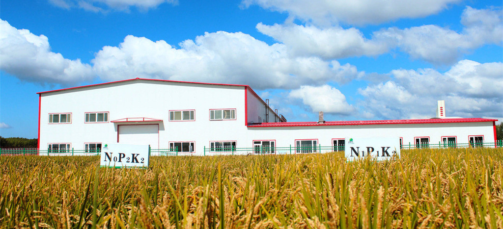

- Chemical fertilizer experiment
 Greenhouse watermelon breeding
Greenhouse watermelon breeding soilless culture
soilless culture-
 Modern greenhouse
Modern greenhouse -
 kiwifruit breeding
kiwifruit breeding

烟草所定向改良主栽品种K326的病毒病抗性取得成功
7月29日，由中国农业科学院烟草研究所完成的“抗烟草烟草普通花叶病毒 (TMV)和烟草黄瓜花叶病毒(CMV)病基因定向改良K326品种” 通过国家烟草专卖局科技司和中国烟叶公司组织的田间鉴评。

蔬菜所发现一种脂肽抗生素生物合成途径
近日，中国农业科学院蔬菜花卉研究所谢丙炎研究员领衔的蔬菜病害防控创新团队与 中国科学院微生物研究所合作，在淡紫拟青霉生物防治作用机制的研究方面取得了重要突破， 解析出了淡紫拟青霉中最重要的脂肽类抗生素 leucinostatins的生物合成途径，相关结果在7月14日发表于国际知名的病原菌刊物《PLoS Pathogens》。


作科所“CIMMYT小麦引进、研究与创新利用”获2015年度国家科学技术进步二等奖
近日，从中国农业科学院郑州果树研究所获悉，由该所桃育种课题组选育的“中桃5号” “黄金蜜桃3号” “中桃22号”3个优质桃品种通过河南省林木品种审定。
双低油菜生产的“沙洋模式”
湖北省沙洋县是国家重要商品油菜籽生产基地， 油菜长年种植面积达60万亩，占全县耕地面积的62%； 油菜籽平均单产184公斤，多年稳居全省首位；总产13万吨， 连续多年居全省乃至全国前列。 该县连续多年承担农业部油菜整县推进高产创建和绿色增产模式攻关项目
冬季油菜田管技术措施
间苗定苗。要求早间苗，稀定苗。掌握的原则是间密留稀，去弱留壮， 调整株间距离，保持均匀。一般分两次间苗，第一次在齐苗后出现第一片真叶时进行 ，间到叶不搭叶；第二次间苗在第二片真叶出现时进行。 三叶期进行定苗，留苗密度根据油菜播种早迟、 秧龄长短和秧苗生长状况而定，一般保持苗距7～10厘米。播种量小的可只间一次苗。
巧用物理措施防好最后一波害虫
由于前期温度高，光照强，菜棚前脸通风口尚未关闭，给害虫迁入创造了条件。随着气温不断降低， 外界害虫寻找越冬场所而迁飞入棚，棚内害虫进入最后的高发期。此段时间，棚内发生最多的仍然是蚜虫、 粉虱、蓟马、螨虫等小型害虫，具有繁殖迅速、抗药性产生快、防治难度大等特点。 此外，蝶蛾类害虫成虫迁飞能力强，一般蝶类在白天活动 ，蛾类在夜间活动，往往在蔬菜定植后对新叶和生长点造成较大为害。
资划所初步完成全国“两区”划定研究工作
近日，从中国农业科学院农业资源与农业区划研究所获悉， 2016年初国家发改委和农业部共同委托资划所农业布局与区域发展创新团队开展 “粮食功能区和重点农产品保护区 （全文简称“两区”）划定研究”， 为我国探索创建两区提供理论支撑，目前，课题研究已取得阶段性进展。


- 烟草所定向改良主栽品种K326的病毒病抗性取得成功
- 蔬菜所发现一种脂肽抗生素生物合成途径
- 郑州果树所3个优质桃品种通过省级品种审定
- 作科所“CIMMYT小麦引进、研究与创新利用”获2015年度国家科学技术进步二等奖
- 双低油菜生产的“沙洋模式”
- 冬季油菜田管技术措施
- 巧用物理措施防好最后一波害虫
- 资划所初步完成全国“两区”划定研究工作
- 安徽农业大学专家揭“苦茶”之谜
- 浙江省茶界首获第一个浙江省科技进步一等奖
- 永安天宝岩茶业获福建三明首个茶业国家发明专利
- 黑茶新产品“酸茶”面市 获2项国家发明专利
- 13年攻关育出有机抗寒茶 极端耐寒温度可达-13℃
- 黎平引种“中茶108”成功
- 七旬老人试制成功高端黄茶 获国家专利
- 华南植物园“一种大头茶种子萌发及育苗的方法”获国家发明专利
- 喝过白茶红茶 喝过紫茶吗
- 云南发现香茶菜新品种 叫洱源香茶菜